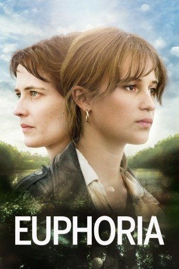

#10135 Euphoria
 
 IMDB-Wertung: 5.8 / 10
IMDB-Wertung: 5.8 / 10  Tomatometer: 15
Tomatometer: 15  Metascore: 0
Metascore: 0 
Seit Jahren hatten die Schwestern Ines (Alicia Vikander) und Emilie (Eva Green) keinen Kontakt mehr zueinander, als Ines eine dringliche Einladung Emilies erhält, sie auf eine mysteriöse Reise in ein abgelegenes Chalet in den Wäldern zu begleiten. Sie willigt ein, wenn auch widerstrebend. Erst als sie ihr Ziel erreichen, begreift Ines, warum Emilie sie an genau diesen Ort geführt hat und was als erholsamer Urlaub und ein erneutes Kennenlernen nach vielen Jahren gedacht war, nimmt eine düstere Wendung… Berührendes und intensives Drama mit Staraufgebot über die „letzte Reise“ zweier Schwestern. Mit Oscar®-Gewinnerin Alicia Vikander (Ex Machina, Tomb Raider), Eva Green (Sin City 2, 300: Rise of an Empire), Oscar®-Nominee Charlotte Rampling (45 Years, Red Sparrow) und Primetime Emmy-Nominee Charles Dance (Gosford Park, Game of Thrones).
Jahr: 2017
Dauer: 94 Minuten
FSK: 12
Land: England Studio: New KSMTonspuren:
Untertitel:
Auflösung: SD (720x300) Größe: 689 MB
Genre: Drama, Abenteuer, Mystery
Regisseur: Lisa Langseth
Drehbuch: Lisa Langseth
Soundtrack: Lisa Holmqvist
Darsteller:
 Alicia Vikander als Ines
Alicia Vikander als Ines Eva Green als Emilie
Eva Green als Emilie Charles Dance als Mr. Daren
Charles Dance als Mr. Daren Charlotte Rampling als Marina
Charlotte Rampling als Marina Mark Stanley als Brian
Mark Stanley als Brian Adrian Lester als Aron
Adrian Lester als Aron August Zirner als Frank
August Zirner als Frank- Tiger Kirchharz als Gogo Dancer
 Steffen Jung als Chauffeur
Steffen Jung als Chauffeur- Katja Brenner als Nurse
- Harald Siebler als Spiritual Guy
- Christiane Blumhoff als Female Guest
- Eveline Hall als Naked Woman
- Olivia Emden als Young Hacker
- Nataliya Stefanac als Go-Go Dancer
- Daron Yates als Receptionist
- Charlotte Walterspiel als String Quartet - Viola
- Susanne Lemke als Young Staffer
- Malakoff Kowalski als Schumann's Pianist
- Hank Florence als The Mergers - bandmember
- Evelyne Grüb-Trauer als String Quartet - Violin
- Jay Le Saux als The Mergers - bandmember
- Jakob Tögel als Staffer #29
- Emily Woods als Companion to Guest #6
- Alexander Brafford als Porter
- Stefan Trauer als String Quartet - Cello
- Anne Weber als Hofgarten Violinst
- Robert Porter Templeton als Garden Party Guest
- Andreas Dubois als Traveller
- Louisa Stroux als Leaving Assistant
- Chantal Dubs als Staffer #77
- Michael Friedrich als String Quartet - Violin
- Winston McClud als The Mergers - bandmember
- Jerry Coma als Singer (Live Band)
- Heiner Börger als Helicopter Pilot
- Sylvia Parr als Guest #6
Datei: X:\2017(A-F)\Euphoria (2017, FSK12, 720x300).mkv seit 11.12.2018
Festplatte: HD 2017(A-Z)-2018(A-F)
 Es gibt insgesamt 152 Filme in der Gruppe '2017(A-F)'
Es gibt insgesamt 152 Filme in der Gruppe '2017(A-F)'